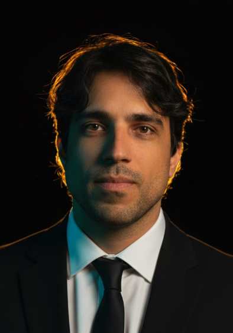

Sou profissional de tecnologia com forte experiência em Engenharia de Qualidade, Platform Engineering, DevOps, automação e confiabilidade de sistemas end-to-end em aplicações backend, frontend e mobile. Nos últimos anos, meu foco tem sido melhorar a performance, a escalabilidade e a resiliência de sistemas por meio de estratégias de validação, testes de estresse, automação e práticas de engenharia aplicadas a ambientes Linux, cloud e plataformas de alto tráfego.
Tenho experiência em projetar e escalar estratégias de testes, além de construir frameworks de automação utilizando JavaScript, TypeScript, Python, Shell Script, .NET, Go e Java. Também atuei extensivamente com pipelines de CI/CD, implementando quality gates, guardrails de testes e validações automatizadas para assegurar confiabilidade, consistência e altos padrões durante todo o ciclo de entrega de software.
Possuo sólida vivência em engenharia de infraestrutura e plataforma, incluindo gestão de ambientes em nuvem, máquinas virtuais e clusters Kubernetes. Entusiasta de Infraestrutura como Código, implementei soluções de automação com Terraform e Ansible para melhorar a escalabilidade, reduzir as operações manuais e aumentar a resiliência dos sistemas.
Também liderei iniciativas com foco em qualidade de código e governança de plataforma, sustentando ambientes de grande porte com milhares de projetos em múltiplas tecnologias. Minha atuação envolveu a definição de padrões, processos, quality gates e práticas de engenharia voltadas à manutenibilidade, eficiência e evolução contínua das plataformas.
Tenho utilizado abordagens orientadas por IA para acelerar a geração de testes, aprimorar a cobertura e aumentar a produtividade geral da engenharia, ajudando times a entregar com maior segurança e velocidade. Adicionalmente, atuo no desenho e implementação de soluções de testes sintéticos para ampliar a observabilidade e a detecção proativa de anomalias em ambientes produtivos.
Gosto de atuar de forma hands-on, colaborar com times multidisciplinares, compartilhar conhecimento e explorar continuamente novas ferramentas e tecnologias. Meu interesse atual está na interseção entre Quality Engineering, Platform Engineering, DevOps, IA e confiabilidade, contribuindo para que times construam, validem e entreguem software de forma mais segura, escalável e eficiente.
I am a technology professional with strong experience in Quality Engineering, Platform Engineering, DevOps, automation, and reliability of end-to-end systems across backend, frontend, and mobile applications. In recent years, my focus has been on improving the performance, scalability, and resilience of systems through validation strategies, stress testing, automation, and engineering practices applied to Linux environments, cloud, and high-traffic platforms.
I have experience in designing and scaling test strategies, as well as building automation frameworks using JavaScript, TypeScript, Python, Shell Script, .NET, Go, and Java. I have also worked extensively with CI/CD pipelines, implementing quality gates, testing guardrails, and automated validations to ensure reliability, consistency, and high standards throughout the software delivery lifecycle.
I have a solid background in infrastructure and platform engineering, including managing cloud environments, virtual machines, and Kubernetes clusters. Passionate about Infrastructure as Code, I implemented automation solutions with Terraform and Ansible to improve scalability, reduce manual operations, and enhance system resilience.
I have also led initiatives focused on code quality and platform governance, supporting large-scale environments with thousands of projects across multiple technologies. My role involved defining standards, processes, quality gates, and engineering practices aimed at maintainability, efficiency, and continuous evolution of platforms.
I have been leveraging AI-driven approaches to accelerate test generation, improve coverage, and enhance overall engineering productivity, helping teams deliver with greater safety and speed. Additionally, I design and implement synthetic testing solutions to expand observability and proactive anomaly detection in production environments.
I enjoy working hands-on, collaborating with multidisciplinary teams, sharing knowledge, and continuously exploring new tools and technologies. My current interest lies at the intersection of Quality Engineering, Platform Engineering, DevOps, AI, and reliability, contributing to helping teams build, validate, and deliver software in a more secure, scalable, and efficient way.
Soy un profesional de la tecnología con sólida experiencia en Ingeniería de Calidad, Platform Engineering, DevOps, automatización y confiabilidad de sistemas de extremo a extremo en aplicaciones backend, frontend y móviles. En los últimos años, mi enfoque ha sido mejorar el rendimiento, la escalabilidad y la resiliencia de los sistemas a través de estrategias de validación, pruebas de estrés, automatización y prácticas de ingeniería aplicadas a entornos Linux, nube y plataformas de alto tráfico.
Tengo experiencia en diseñar y escalar estrategias de prueba, además de construir frameworks de automatización utilizando JavaScript, TypeScript, Python, Shell Script, .NET, Go y Java. También he trabajado extensamente con canalizaciones de CI/CD, implementando quality gates, barreras de prueba y validaciones automatizadas para asegurar la confiabilidad, consistencia y altos estándares durante todo el ciclo de entrega de software.
Poseo una sólida trayectoria en ingeniería de infraestructura y plataforma, incluyendo la gestión de entornos en la nube, máquinas virtuales y clústeres Kubernetes. Entusiasta de la Infraestructura como Código, implementé soluciones de automatización con Terraform y Ansible para mejorar la escalabilidad, reducir las operaciones manuales y aumentar la resiliencia de los sistemas.
También he liderado iniciativas enfocadas en la calidad del código y la gobernanza de plataformas, dando soporte a entornos de gran escala con miles de proyectos en múltiples tecnologías. Mi función implicó definir estándares, procesos, quality gates y prácticas de ingeniería dirigidas a la mantenibilidad, eficiencia y evolución continua de las plataformas.
He estado utilizando enfoques impulsados por IA para acelerar la generación de pruebas, mejorar la cobertura y aumentar la productividad general de la ingeniería, ayudando a los equipos a realizar entregas con mayor seguridad y velocidad. Adicionalmente, diseño e implemento soluciones de pruebas sintéticas para ampliar la observabilidad y la detección proactiva de anomalías en entornos de producción.
Disfruto del trabajo hands-on, colaborando con equipos multidisciplinarios, compartiendo conocimientos y explorando continuamente nuevas herramientas y tecnologías. Mi interés actual está en la intersección entre Quality Engineering, Platform Engineering, DevOps, IA y confiabilidad, contribuyendo a que los equipos construyan, validen y entreguen software de manera más segura, escalable y eficiente.
Sono un professionista della tecnologia con una solida esperienza in Ingegneria della Qualità, Platform Engineering, DevOps, automazione e affidabilità dei sistemi end-to-end in applicazioni backend, frontend e mobile. Negli ultimi anni, il mio obiettivo è stato migliorare le prestazioni, la scalabilità e la resilienza dei sistemi attraverso strategie di convalida, test di stress, automazione e pratiche ingegneristiche applicate ad ambienti Linux, cloud e piattaforme ad alto traffico.
Ho esperienza nella progettazione e scalabilità di strategie di test, nonché nella creazione di framework di automazione utilizzando JavaScript, TypeScript, Python, Shell Script, .NET, Go e Java. Ho anche lavorato a lungo con pipeline di CI/CD, implementando quality gates, guardrail di test e convalide automatizzate per garantire affidabilità, coerenza e standard elevati durante tutto il ciclo di consegna del software.
Possiedo un solido background nell'ingegneria delle infrastrutture e delle piattaforme, inclusa la gestione di ambienti cloud, macchine virtuali e cluster Kubernetes. Appassionato di Infrastructure as Code, ho implementato soluzioni di automazione con Terraform e Ansible per migliorare la scalabilità, ridurre le operazioni manuali e aumentare la resilienza dei sistemi.
Ho guidato inoltre iniziative incentrate sulla qualità del codice e sulla governance della plataforma, supportando ambienti su larga scala con migliaia di progetti in molteplici tecnologie. Il mio ruolo ha comportato la definizione di standard, processi, quality gates e pratiche ingegneristiche mirate alla manutenibilità, all'efficienza e all'evoluzione continua delle piattaforme.
Sto sfruttando approcci guidati dall'IA per accelerare la generazione di test, migliorare la copertura e aumentare la produttività ingegneristica complessiva, aiutando i team a consegnare con maggiore sicurezza e velocità. Inoltre, progetto e implemento soluzioni di test sintetici per espandere l'osservabilità e il rilevamento proattivo delle anomalie negli ambienti di produzione.
Mi piace lavorare in modo hands-on, collaborando con team multidisciplinari, condividendo conoscenze ed esplorando continuamente nuovi strumenti e tecnologie. Il mio attuale interesse si colloca all'intersezione tra Quality Engineering, Platform Engineering, DevOps, IA e affidabilità, contribuendo ad aiutare i team a creare, convalidare e distribuire software in modo più sicuro, scalabile ed efficiente.
Liderando iniciativas de arquitetura da qualidade em testes de backend, frontend, mobile e performance, garantindo estratégias de validação escaláveis e confiáveis em toda a plataforma.
Aplicando abordagens baseadas em IA para acelerar a criação de testes, melhorar a cobertura e elevar a eficiência da engenharia e a qualidade do produto.
Projetando e implementando soluções de testes sintéticos para fortalecer a observabilidade e permitir a detecção proativa de problemas em produção.
Leading quality architecture initiatives across backend, frontend, mobile, and performance testing, ensuring scalable and reliable validation strategies across the platform.
Applying AI-driven approaches to accelerate test creation, improve coverage, and elevate engineering efficiency and product quality.
Designing and implementing synthetic testing solutions to strengthen observability and enable proactive detection of production issues.
Liderando iniciativas de arquitectura de calidad en pruebas de backend, frontend, móviles y de rendimiento, garantizando estrategias de validación escalables y confiables en toda la plataforma.
Aplicando enfoques impulsados por IA para acelerar la creación de pruebas, mejorar la cobertura y elevar la eficiencia de la ingeniería y la calidad del producto.
Diseñando e implementando soluciones de pruebas sintéticas para fortalecer la observabilidad y permitir la detección proactiva de problemas de producción.
Guidando iniziative di architettura della qualità nei test backend, frontend, mobile e di performance, garantendo strategie di convalida scalabili e affidabili su tutta la piattaforma.
Applicando approcci guidati dall'IA per accelerare la creazione di test, migliorare la copertura ed elevare l'efficienza ingegneristica e la qualità del prodotto.
Progettando e implementando soluzioni per test sintetici al fine di rafforzare l'osservabilità e consentire il rilevamento proattivo di problemi in produzione.
Liderei as iniciativas de engenharia de qualidade como Tech Lead, projetando e implementando um framework escalável de automação de testes (Java, Selenium, REST Assured) e estabelecendo pipelines de CI no Jenkins para garantir a execução consistente e confiável dos testes.
Fiz a transição para atuar como SRE / DevOps Engineer, assumindo a liderança do principal serviço de alto tráfego da empresa (homepage). Impulsionei melhorias de confiabilidade e escalabilidade implementando a automação da infraestrutura com Terraform e Ansible, permitindo um escalonamento eficiente e aprimorando significativamente a resiliência geral do sistema.
Led quality engineering initiatives as a Tech Lead, designing and implementing a scalable test automation framework (Java, Selenium, REST Assured) and establishing CI pipelines in Jenkins to ensure consistent and reliable test execution.
Transitioned into an SRE / DevOps Engineer role, owning the company’s core high-traffic service (homepage). Drove reliability and scalability improvements by implementing infrastructure automation with Terraform and Ansible, enabling efficient scaling and enhancing overall system resilience.
Lideré las iniciativas de ingeniería de calidad como Tech Lead, diseñando e implementando un marco escalable de automatización de pruebas (Java, Selenium, REST Assured) y estableciendo pipelines de CI en Jenkins para asegurar la ejecución consistente y confiable de las pruebas.
Me transferí al puesto de SRE / DevOps Engineer asumiendo el liderazgo del servicio central de alto tráfico de la empresa (homepage). Impulsé mejoras de confiabilidad y escalabilidad al implementar la automatización de infraestructura con Terraform y Ansible, lo que permitió un escalamiento eficiente y mejoró significativamente la resiliencia general del sistema.
Ho guidato le iniziative di ingegneria della qualità come Tech Lead, progettando e implementando un framework di automazione dei test scalabile (Java, Selenium, REST Assured) e stabilendo pipeline CI in Jenkins per garantire un'esecuzione coerente e affidabile dei test.
Sono passato al ruolo di SRE / DevOps Engineer assumendo la guida del servizio principale ad alto traffico dell'azienda (homepage). Ho promosso miglioramenti in tema di affidabilità e scalabilità implementando l'automazione dell'infrastruttura con Terraform e Ansible, consentendo una scalabilità efficiente e migliorando significativamente la resilienza complessiva del sistema.